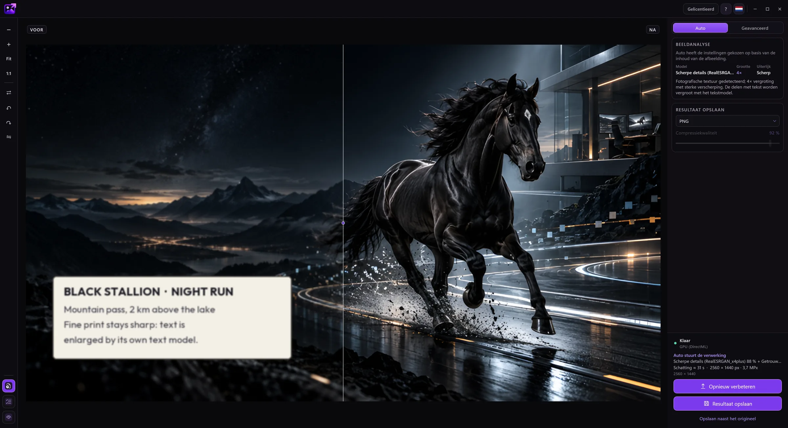
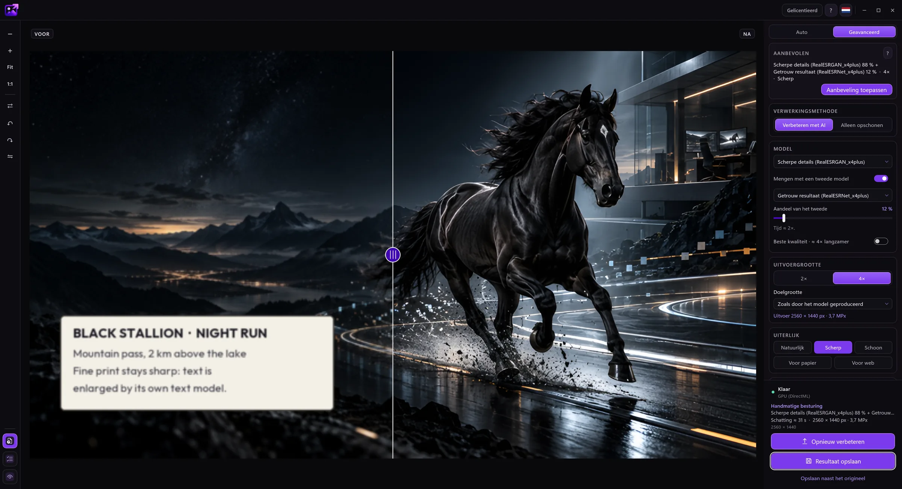
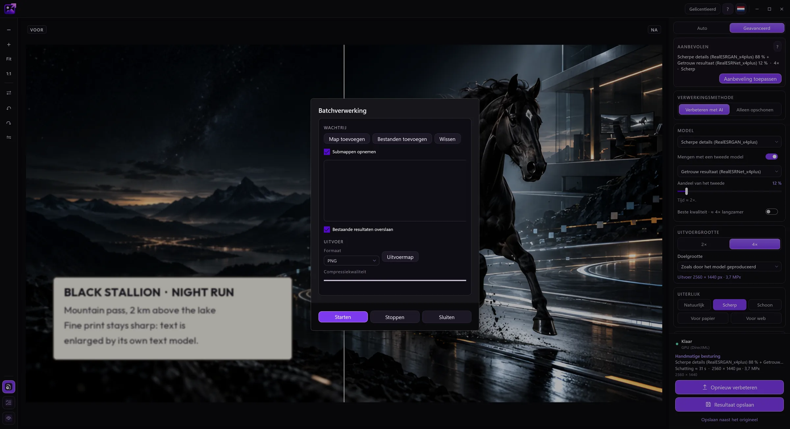

Auto-modus
De app herkent de afbeelding (foto, tekening, tekst, beschadigde opname) en kiest het model en de grootte. Ruisige foto’s worden eerst opgeschoond en daarna wordt fijn korrel teruggezet, zodat het resultaat er niet geschilderd uitziet.
EasyUpscale AI vergroot en verbetert afbeeldingen met AI, rechtstreeks op je computer. Geen cloud, geen abonnement, geen wachtrij.
Je kunt de proefversie gratis downloaden en uitproberen. Koop een licentie als het je bevalt.


In de originele foto (384 × 256 px) is dit detail slechts 75 × 50 pixels. Links: de echte pixels, midden: een standaardvergroting, rechts: EasyUpscale AI (4×).


In de Auto-modus herkent de app de afbeelding en kiest ze zelf het model, de schaal en de look.
Sleep een foto of een hele map naar het venster. Of klik er in Verkenner met de rechtermuisknop op en kies het vergrootcommando.
De app bepaalt wat de afbeelding toont en kiest een passend model. Je ziet de voortgang en kunt altijd annuleren.
Schuif om het origineel met het resultaat te vergelijken en sla het op als PNG, JPEG, WebP, AVIF, TIFF of BMP.

Verschuif de lijn om te vergelijken. De originele foto’s zijn slechts 384 × 256 px. Links: standaardvergroting, rechts: het echte resultaat van de app (het model “Scherpe details”).


De app herkent de afbeelding (foto, tekening, tekst, beschadigde opname) en kiest het model en de grootte. Ruisige foto’s worden eerst opgeschoond en daarna wordt fijn korrel teruggezet, zodat het resultaat er niet geschilderd uitziet.
Kies het model zelf, meng twee modellen in een gekozen verhouding en stel de grootte in, van 2× en 4× tot voorinstellingen zoals 4K of Full HD.
Vergroot een hele map in één keer. Of wijs een map aan waarin nieuwe afbeeldingen op de achtergrond vanzelf worden vergroot.
Looks en schuifregelaars voor scherpte, ruisonderdrukking, nabijheid tot het origineel en halo's rond randen.
Slaat PNG, JPEG, WebP, AVIF, TIFF en BMP op. Transparantie en metadata blijven behouden.
Een opdracht in het contextmenu van Verkenner, starten met Windows en een map bewaken vanuit het systeemvak, en 15 talen.
Een tool die één ding goed doet: op je eigen pc, zonder account en voor één prijs.
Een eenmalige licentie. Geen abonnement, geen tegoeden per afbeelding, geen wachtrij. De app is over een jaar nog steeds van jou.
Alles draait op je videokaart en er wordt niets geüpload. Foto's van klanten en van het bedrijf zijn geen probleem.
Foto's, tekeningen, oude beschadigde opnamen en tekst en labels hebben elk hun eigen model. Auto kiest het juiste en gebruikt het tekstmodel voor de delen van een foto met tekst.
Batchverwerking, een bewaakte map en een opdracht in Verkenner: afbeeldingen worden vergroot terwijl jij iets anders doet.
NVIDIA, AMD en Intel via DirectX 12. Geen dure kaart en geen specifiek merk nodig.
Probeer alle functies gratis, alleen met een watermerk. Na aankoop heb je 14 dagen om je geld terug te krijgen, zonder reden.
Afbeeldingen worden volledig op je videokaart verwerkt. Er wordt niets geüpload, er zijn geen credits per afbeelding en geen wachtrij.
Het enige wat de app verstuurt, zijn de licentiesleutel en de computernaam bij de licentiecontrole. Zonder licentiesleutel maakt ze geen verbinding met internet. Details staan in het privacybeleid.
Het echte EasyUpscale-venster.



Elke functie werkt zonder licentie. Het enige verschil is een watermerk over het resultaat, lichter in de voorvertoning en sterker in opgeslagen bestanden.
Nee. Alles wordt op je computer berekend. Details staan in het onderdeel Privacy.
De sleutel wordt één keer via internet geactiveerd. Daarna controleert de app de licentie af en toe op de achtergrond en werkt ze tot 30 dagen na de laatste controle zonder verbinding. Een licentie geldt voor één computer. Als je van computer wisselt, verwijder je de activering in de app en gebruik je de sleutel op de nieuwe.
Je kunt binnen 14 dagen na aankoop herroepen en krijgt de volledige prijs terug, zonder opgave van reden. Daarna betalen we terug als de app op je computer niet werkt en we dat niet kunnen oplossen. De app is vooraf ook gratis uit te proberen. Details staan in het restitutiebeleid.
Een eenvoudig desktopprogramma. Jouw videokaart, jouw bestanden, jouw resultaat.